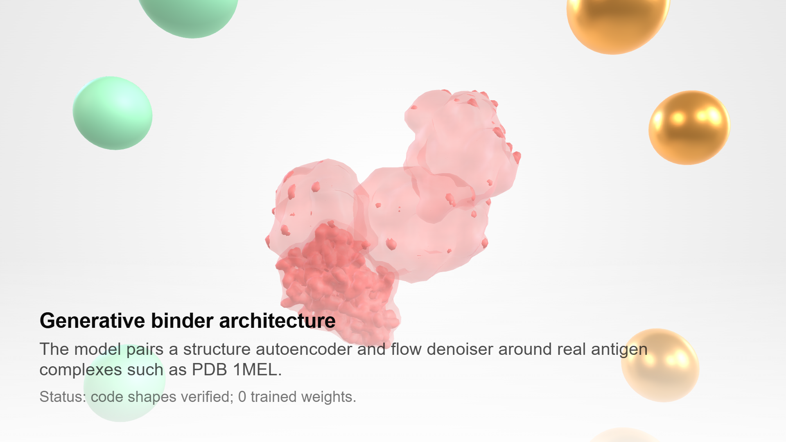
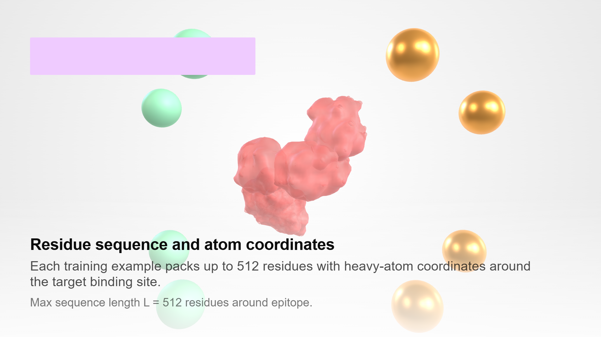
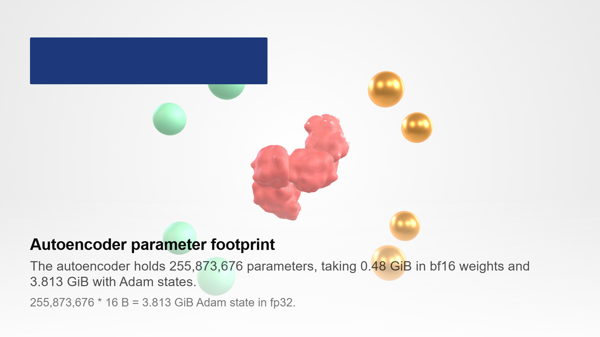
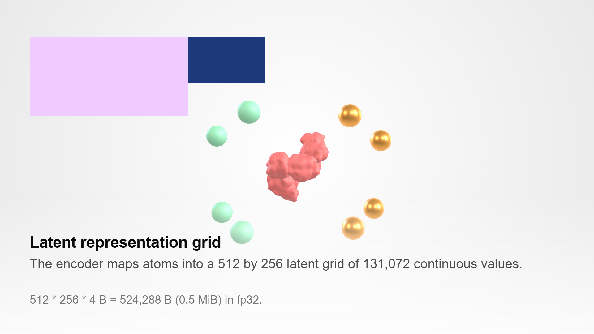
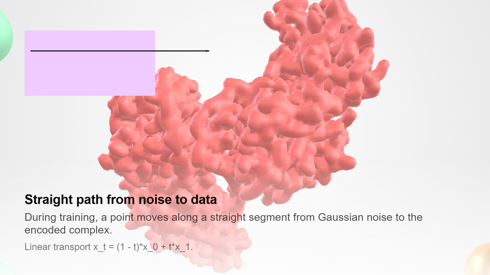
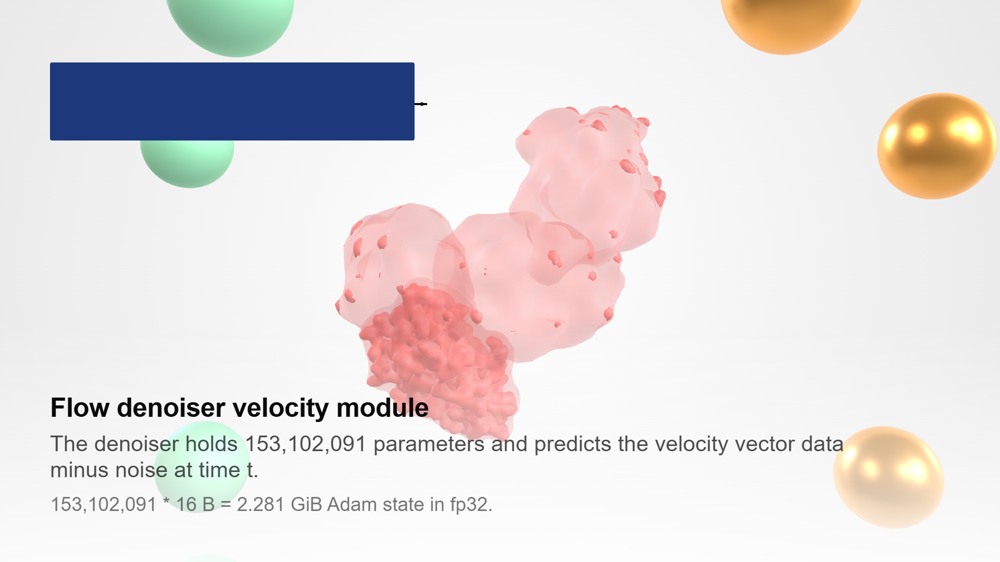
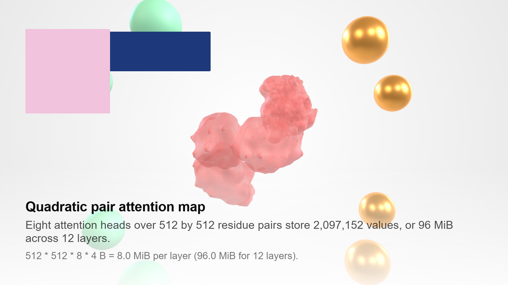
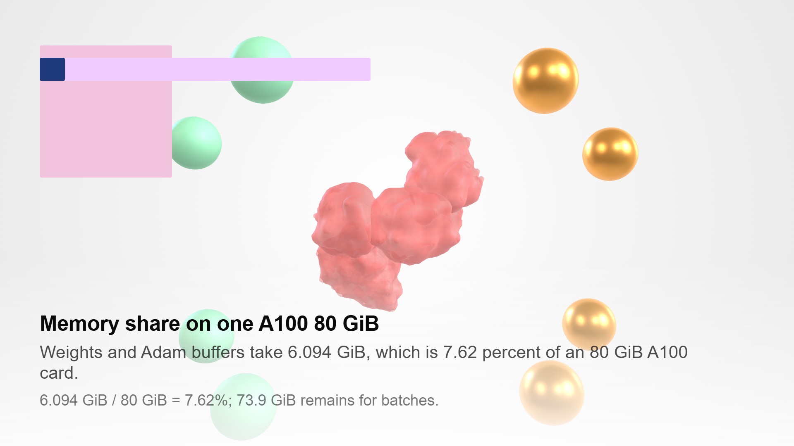
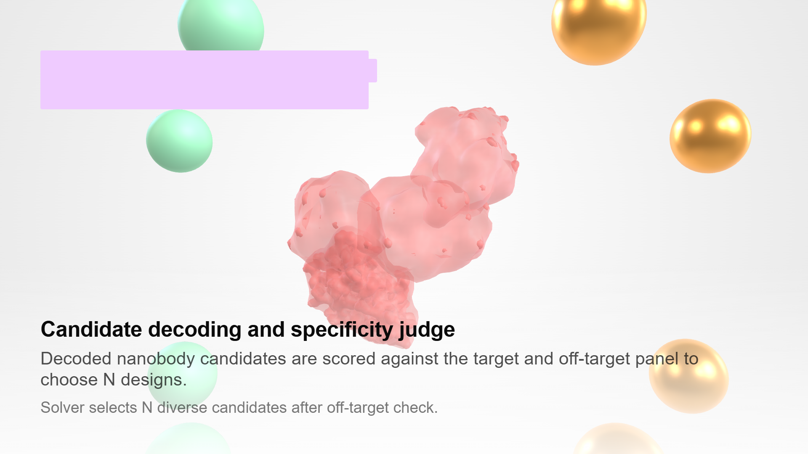
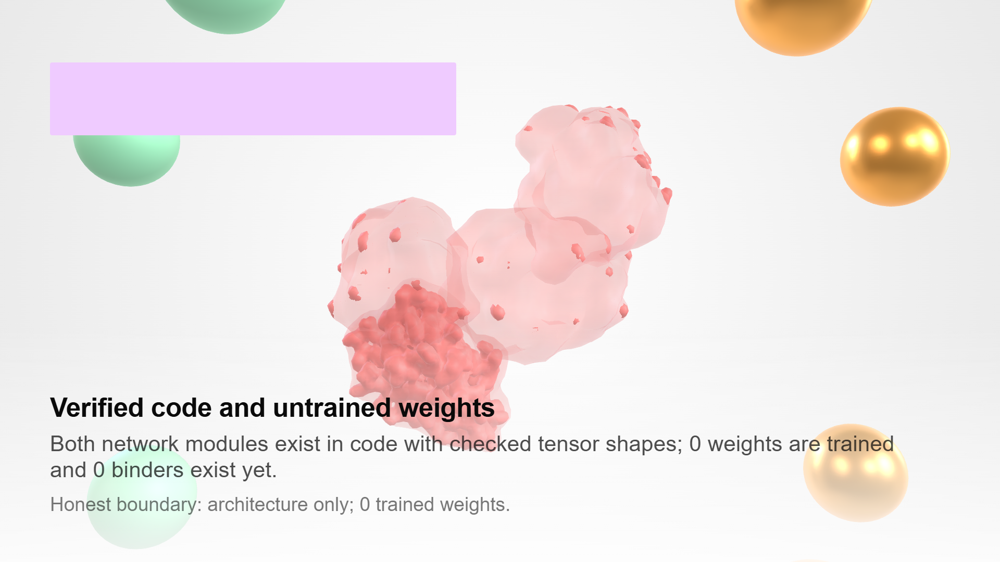

The model pairs a structure autoencoder and flow denoiser around real antigen complexes such as PDB 1MEL.

Each training example packs up to 512 residues with heavy-atom coordinates around the target binding site.

The autoencoder holds 255,873,676 parameters, taking 0.48 GiB in bf16 weights and 3.813 GiB with Adam states.

The encoder maps atoms into a 512 by 256 latent grid of 131,072 continuous values.

During training, a point moves along a straight segment from Gaussian noise to the encoded complex.

The denoiser holds 153,102,091 parameters and predicts the velocity vector data minus noise at time t.

Eight attention heads over 512 by 512 residue pairs store 2,097,152 values, or 96 MiB across 12 layers.

Weights and Adam buffers take 6.094 GiB, which is 7.62 percent of an 80 GiB A100 card.

Decoded nanobody candidates are scored against the target and off-target panel to choose N designs.

Both network modules exist in code with checked tensor shapes; 0 weights are trained and 0 binders exist yet.